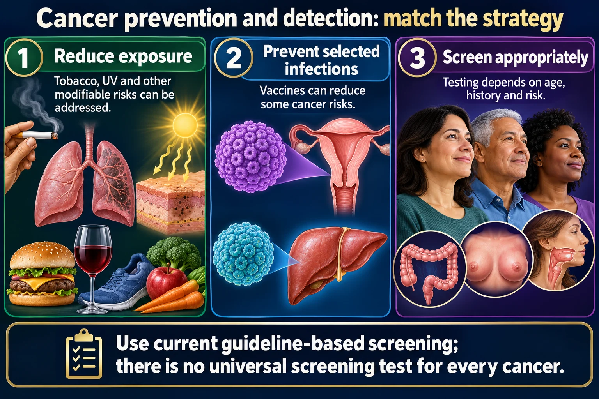

The three levels of prevention, the warning signs mnemonic, and what screening actually does.

The exam asks you to classify an action rather than perform it, so the classification is the mark.
Use current guideline-based screening; there is no universal screening test for every cancer.
Reduce exposure
Tobacco, UV and other modifiable risks can be addressed.
Prevent selected infections
Vaccines can reduce some cancer risks.
Screen appropriately
Testing depends on age, history and risk.
Screening
Tests apparently well people in defined groups.
Diagnosis
Investigates symptoms or abnormal findings.
Follow-up
An abnormal screening test usually needs further evaluation rather than immediate diagnostic labeling.
Exam questions constantly ask you to classify an action rather than perform it. The classification is the mark.
| Level | Goal | Examples |
|---|---|---|
| Primary | Stop it ever happening | HPV and hepatitis B vaccination, smoking cessation, sunscreen, limiting alcohol, healthy weight and diet, avoiding occupational carcinogens |
| Secondary | Find it early, before symptoms | Mammogram, Pap and HPV test, colonoscopy, PSA discussion, low-dose CT for smokers, skin checks |
| Tertiary | Limit damage and disability once it exists | Treatment, rehabilitation, lymphedema management, palliative and survivorship care |
Primary prevents. Secondary detects. Tertiary manages. Three words. A mammogram in a woman with no symptoms is secondary — it does not prevent cancer, it finds it. The HPV vaccine is primary — it prevents the infection that causes it. That pair is a favorite.
An old mnemonic that still earns its place, because every letter is something a patient can notice at home.
Add the two general ones that are always significant: unexplained weight loss and unexplained persistent fatigue.
6 mm, roughly a pencil eraserA mole that is changing needs assessment even if it fails every other letter.
Tobacco is the single largest preventable cause of cancer. If you can only address one thing, address that. Quitting reduces risk at any age, and the risk keeps falling for years afterwards — a fact worth telling a patient who thinks it is too late.
Modifiable risk, in rough order of impact
The most useful question is not "do you attend screening" but "what has got in the way".
Know who is higher risk. A strong family history, a known BRCA or Lynch mutation, previous radiation, chronic hepatitis, or long-standing inflammatory bowel disease all mean earlier and more frequent screening than the general population, and sometimes genetic counseling. Recognizing that a patient is not average-risk is often the whole of the nursing judgment.